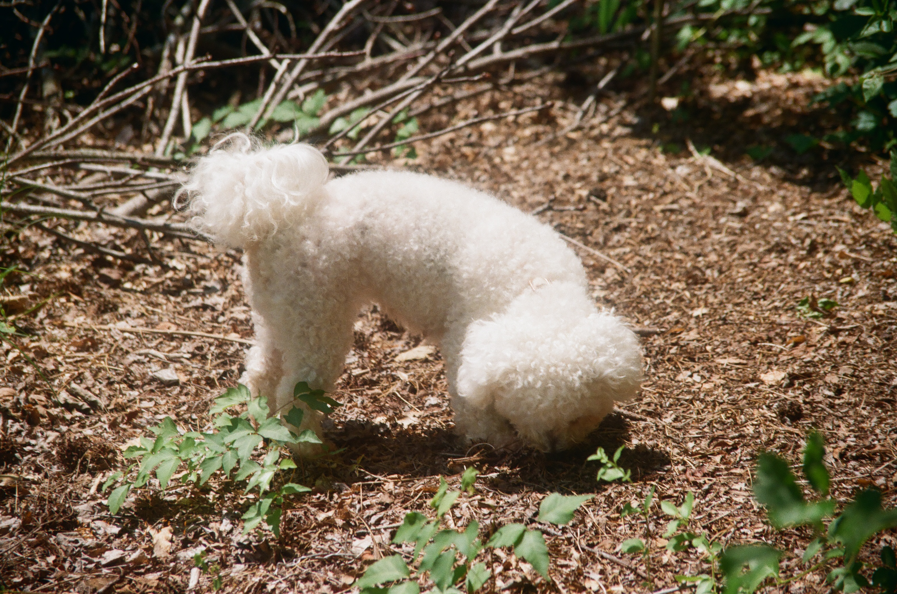

FilmCentral is a public domain of film photographs, intended to provide visual and aesthetic aid to photographers and artists.
The goal is to be able to visualize your next roll before you take it.
Film photographs are unique in their unpredictability. Shooting blind and anxious developing.
The goal is to create a platform where photographers can document and archive various different types of film.
Spend less time worrying about what type of film to get for your project, and spend more time shooting!